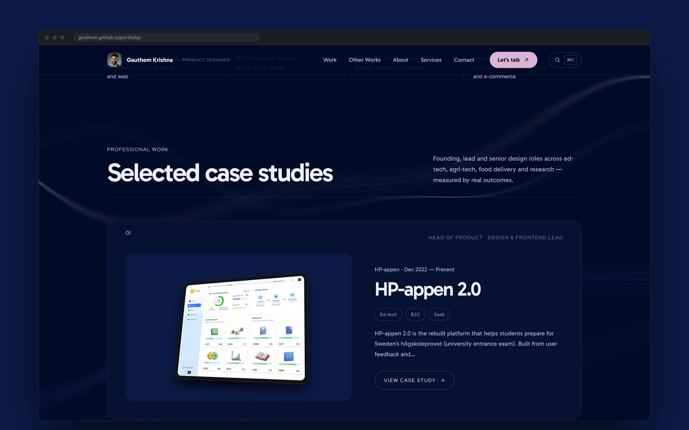
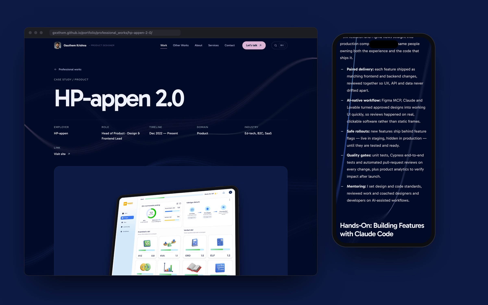
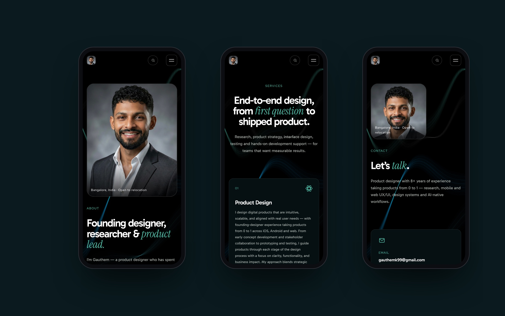

I redesigned and rebuilt my portfolio from scratch — moving from a Framer template to a hand-built static site, designed by me and built with Claude Code. The goal: a site that feels like mine, tells my work in depth, and is fully owned — no platform, no subscription, no lock-in.
Problem Statement
My previous portfolio was a year out of date. It still described past roles, missed the product I now lead as Head of Product, and its template layout made my work look like everyone else’s. Updating it meant fighting a visual editor, and the content lived inside a platform I didn’t control.
Goals
- Tell the real story: current role, measurable impact, and detailed case studies with genuine product screens.
- Create a distinctive, confident visual identity that grabs attention without relying on generic effects.
- Own the stack: plain HTML, CSS and JavaScript, content in simple files, free hosting on GitHub Pages.
- Make updates effortless: edit one content file, run one command, publish.
Design Direction
- Palette: pitch black with five colours — peach for actions, coral for labels, crimson and plum for the background ribbons, slate for surfaces.
- Typography: Gabarito for headlines and body, Red Hat Display for small labels, and Instrument Serif italics for a single accent word per page. I first explored personal-use fonts, then chose close open-licence alternatives so the site can be published legally.
- Signature element: slow, generative light ribbons drawn on a canvas behind the content — they react gently to scroll and the cursor, and stay still for people who prefer reduced motion.
- Restraint: I deliberately removed the tells of templated, AI-generated design — pulsing dots, gradient text, glassy cards, glow shadows and cursor spotlights — in favour of solid surfaces, thin borders and plain, direct headings.
Structure

- A homepage that leads with who I am and what I’ve achieved — role, location, years of experience and headline metrics — before the work.
- Case study cards that alternate left and right, each with my role, timeline and industry tags.
- Side projects with category filters, followed by experience, services and tools.
- Long-form case studies with a sticky table of contents, a reading-progress bar, captions on every image and a “next project” card.

Building It with Claude Code
I designed the site and built it together with Claude Code, treating it like a real product rather than a one-off page.
- Content as data: every page is generated from simple content files by a small, dependency-free build script — 28 pages from one command.
- Migration: all content and images were carried over from the old site and self-hosted, with the same URL structure.
- Case studies from real sources: updated from my resume, the live HP-appen website and the product’s own screens.
- Mockups: generated by placing real screens — and live pages of this site — into device frames and rendering them, so every image shows the actual product.
- Quality checks: every build is checked for broken links and images, and each layout is reviewed at phone and desktop widths.
Interactions With a Purpose
- A hello in many languages: the first visit opens with greetings from around the world — including Swedish and Malayalam, for Sweden and Kerala, where I’ve studied and worked — before landing on “Hi, I’m Gauthem.”
- Living headline and numbers: the hero’s accent word rotates through what good products do, and the key metrics count up as they come into view.
- Living background: the ribbons bend towards the cursor, and a click or tap sends a ripple through them.
- Hover previews: project cards cycle through screens from the case study, so visitors see the product before they click.
- Playable product moment: the HP-appen case study includes a real exam question you can answer, with the teacher’s explanation — the product’s core loop, in miniature.
- ⌘K quick search: jump to any project or page from anywhere.
- Click-to-zoom on every case study image, and a live Bangalore clock so people in other time zones know when I’m around.
Details That Matter

- Responsive from 320px up, with a full-screen mobile menu.
- Accessible by default: skip link, visible focus states, labelled controls, semantic headings and reduced-motion support.
- Fast: no framework, lazy-loaded images and a small script for motion and interactions.
- Shareable: a clean link preview with my photo when the site is posted on LinkedIn or Slack.
Outcome
The result is a portfolio that reflects where I am now — as a product designer who leads teams and ships real software — and that I can update in minutes. Building it end to end with Claude Code also mirrors how I work today: design decisions made by me, with AI accelerating the path from idea to production.